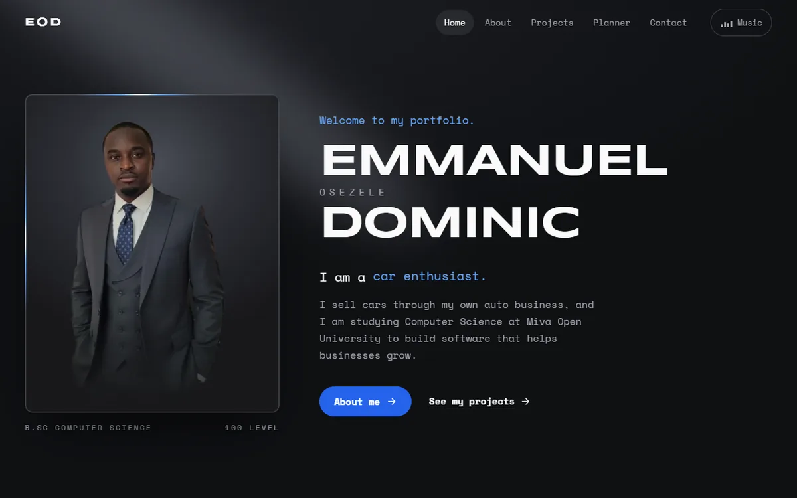

Live
This portfolio
The site you are on. Five pages built with plain HTML, CSS and JavaScript for COS 106, with a background song and its own player, an academic planner that saves tasks, and a contact form that checks every field.